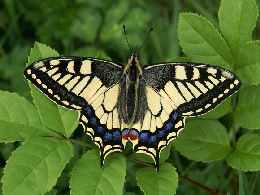

BUTTERFLY SHOWCASE
Check out our butterfly conservatory showcasing over 20 butterfly species including:
Blue Morpho

Submitted by user iosborn22. Blue morpho butterflys wings are bright blue, edged with black. Bluem morpho is among the largest butterflies in the world, with wings spannig from five to eigth inches. When blue morpho flies, the constrasting bright blue and dull brown colors flash, making it look like the morpho is appearing and disappearing.
Old World Swallowtail

Submitted by user smoothj282. Papilio machaon. the old world swallowtail, is apsecies of swallowtail that naturally occurs in Europe, Africa, Asia and even North America. It prefers to lay eggs on Apiaceae Plants. It is a medium sized swallowtail that is relatively easy to rear and breed in captivity.
OUR MISSION STATEMENT
Butterfly World is a unique Lepidoptera source in our state, featuring an 8,000-square foot indoor conservatory home to some 4,000 exotic and domestic butterflies in a tropical environment. Butterfly World focueses on butterfly-related education, recreation, entertainment and gardening needs.
LATEST NEWS
By Cheri Plum, posted April 31m 2022
Butterfly World Opens Its Doors
Latest Conservatory addition.
Need more data?
Contact us with your questions, ideas and suggestions.
© Copyright 2038 ButterflyWorld.info.